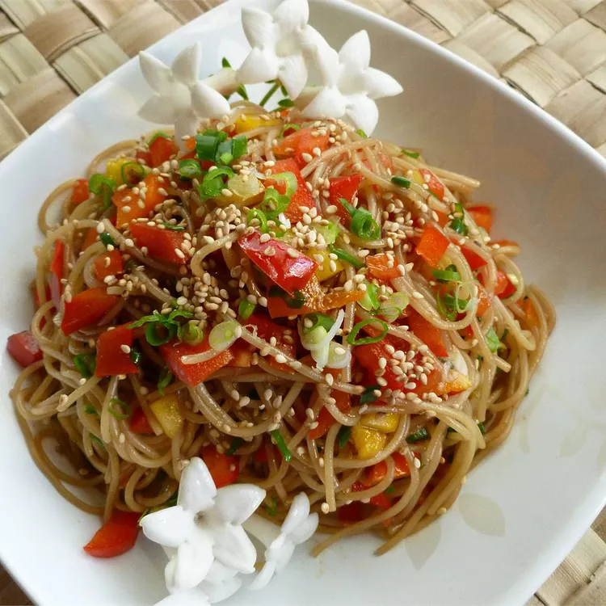

Sesame Noodle Salad

Amazing and simple sesame noodle salad recipe.
Takes around 30-45 minutes to make!
Ingredients:
- 1 (16 ounces) package angel hair pasta
- 1/2 cup sesame oil
- 1/2 cup soy sauce
- 1/4 cup balsamic vinegar
- 1 tablespoon hot chili oil
- 1/4 cup white sugar
- 1 teaspoon sesame seeds, or more if desired
- 1 green onion, chopped
- 1 red bell pepper, diced
Steps:
-
Fill a large pot with lightly salted water and bring to
a roiling boil over high heat
- Once water is boiling, stir in the angel hair pasta, and return to a boil
-
Cook the pasta uncovered, stirring ocassionally, until the pasta
has cooked through, but is still firm to the bite, 4-5 mintes
- Drain well in a colander and set in the sink
-
Whisk together the sesame oil, soy sauce, balsamic vinegar,
chili oil, and sugar in a large bowl
-
Toss the pasta in the dressing, then sprink with sesame
seeds, green onion, and bell pepper
- Serve warm, or cover and refrigerate for a cold salad